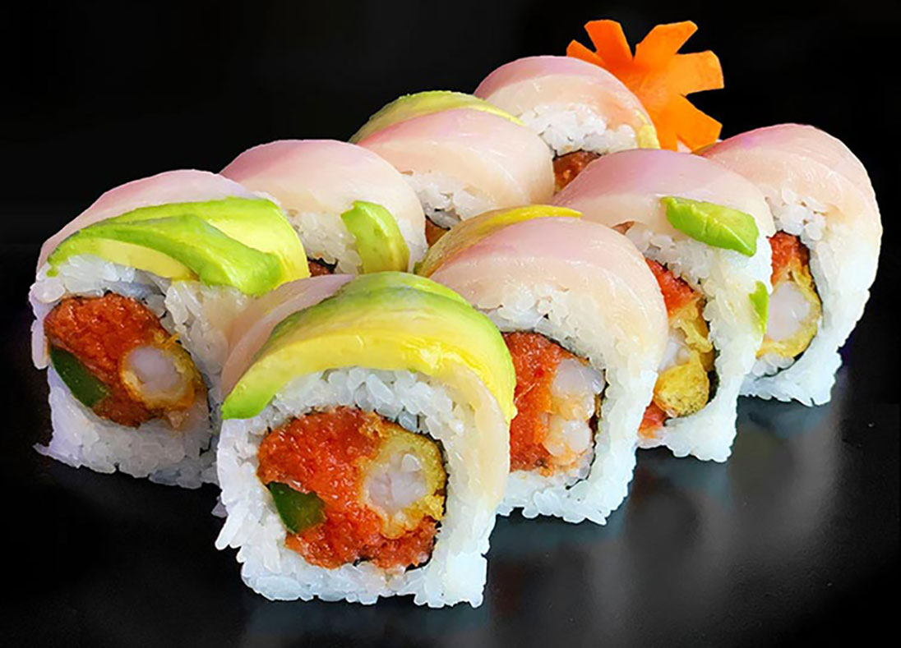
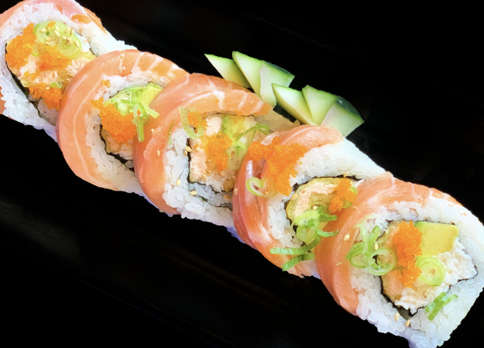
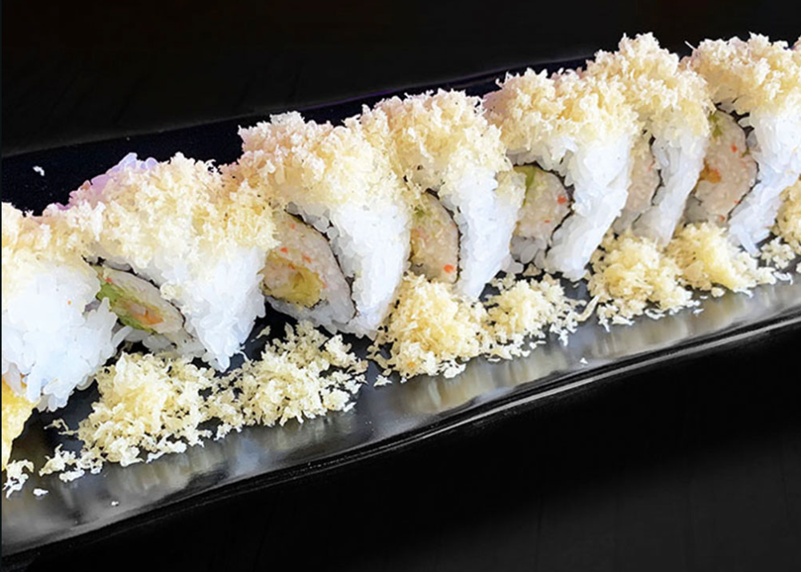
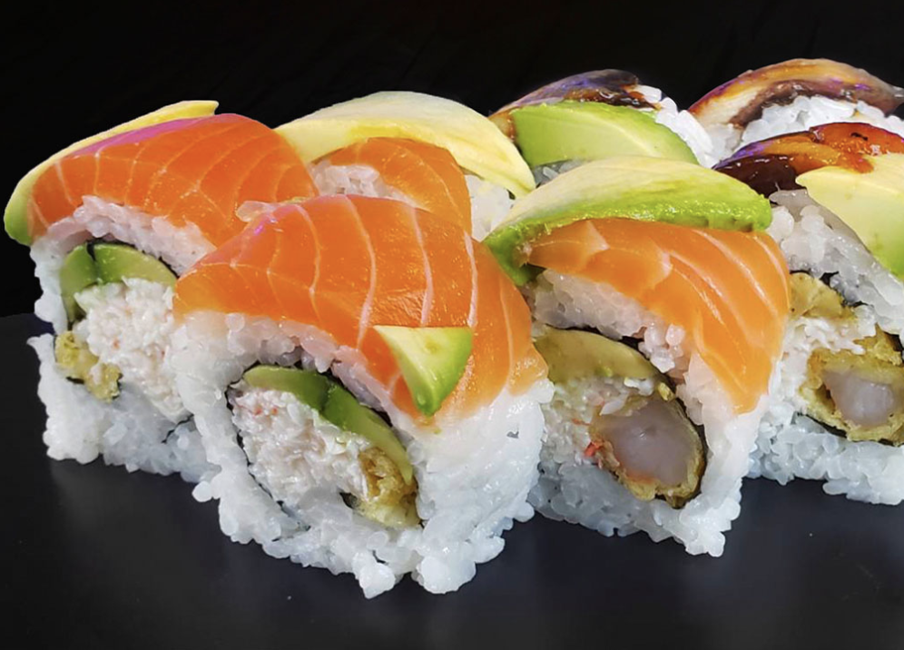
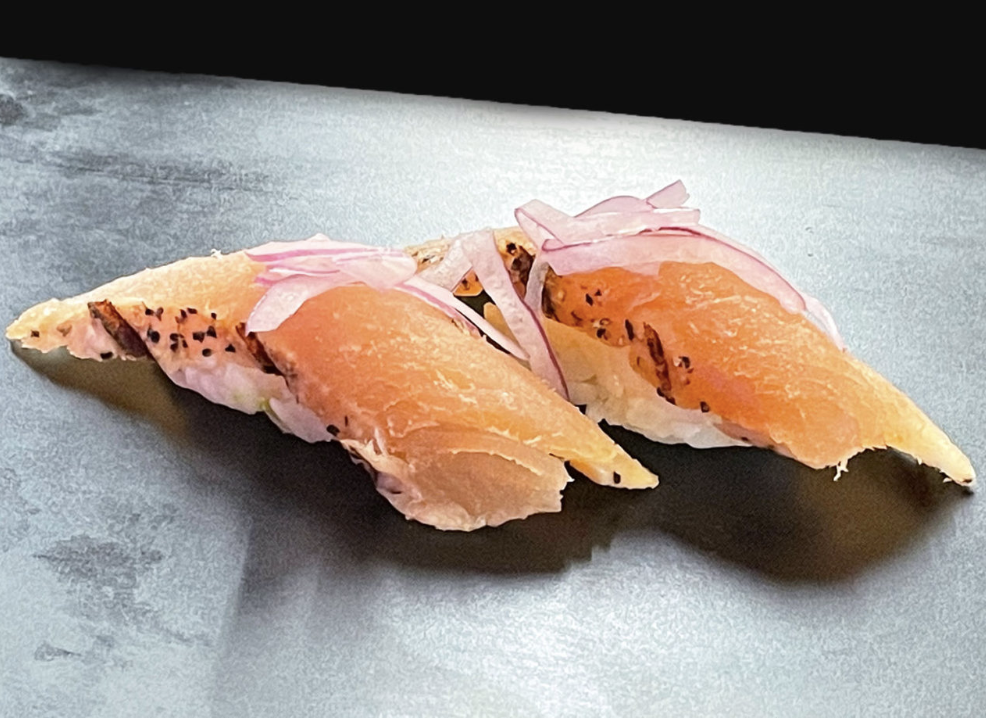
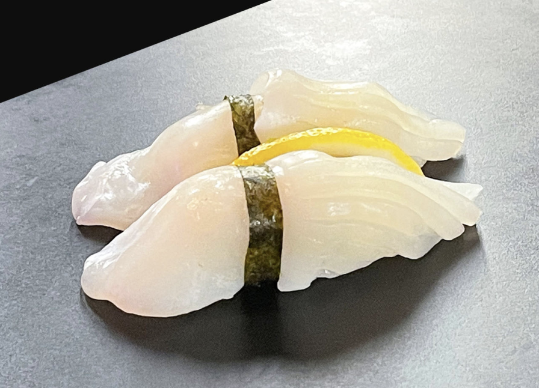
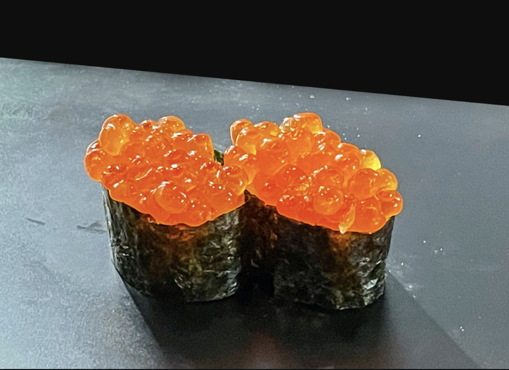
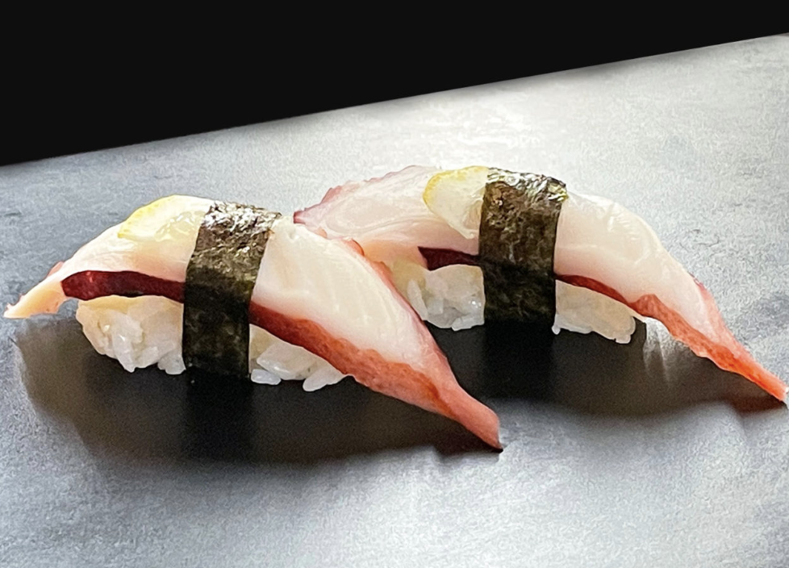

Yellowtail
featuring a spicy tuna and shrimp tempura filling, topped with creamy avocado,
crispy deep-fried
jalapeño,
and succulent slices of yellowtail. (8pcs)

Salmon Roll
featuring a spicy tuna and shrimp tempura filling, topped with creamy avocado,
crispy
deep-fried jalapeño, and succulent slices of yellowtail. (8pcs)

Crunchy Roll
featuring succulent shrimp tempura, creamy avocado, and savory crab, topped with a
crunchy layer of tempura flakes. (8pcs)

Exotic Tiger
this mouth-watering dish features succulent crab, creamy avocado, and crispy shrimp
tempura, topped with deliciously tender eel, fresh salmon, and more avocado. (8pcs)

Albacore
It has a fairly firm texture. But it’s also tender and easy to chew. It has a mild,
savory flavor with a bit of sourness on the finish.

Squid (Ika)
It has a very mild taste that can be defined as mostly sweet with a hint of seafood taste.

Ikura (Salmon Eggs)
The flavor is briny, slightly fishy, and subtly sweet. It tastes kind of like the ocean, and it has a
lot of umami.

Tako (Octopus)
It is firm-textured, mild-flavored ingredient perfect for eating with a little soy sauce and wasabi.